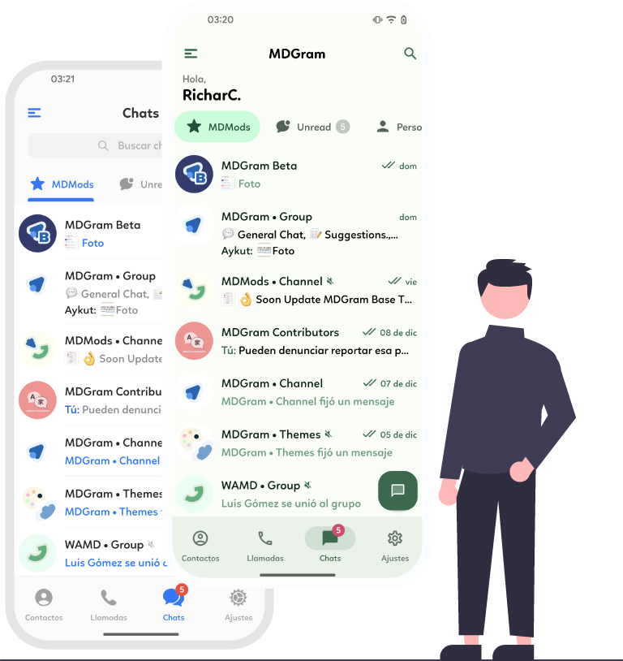
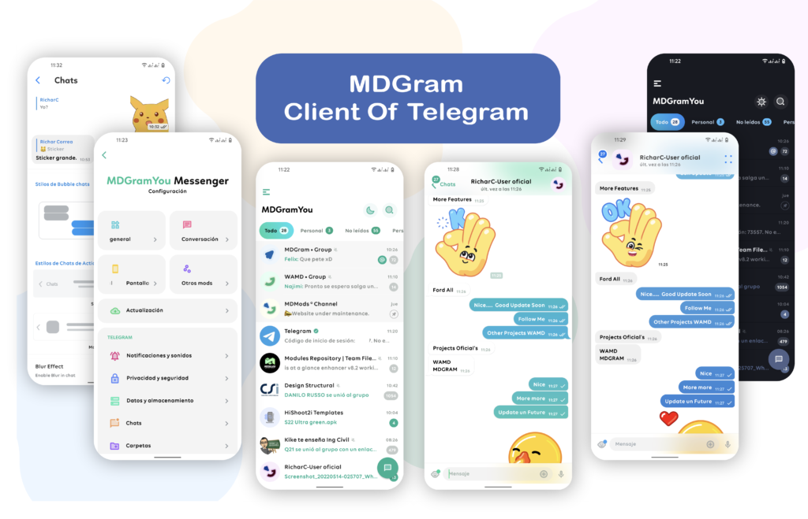

Dos estilos de interfaz
Cambia entre Material You y estilo iOS en la pantalla de inicio y en la de conversación, sin reinstalar nada.
MDGram usa la API oficial de Telegram y le pone encima una interfaz completamente rediseñada: elige entre Material You o estilo iOS, personaliza burbujas, fuentes e iconos, y traduce mensajes sin salir del chat.

MDGram conserva la mensajería, los grupos, los canales y la seguridad que ya conoces, y añade una capa de personalización que la app oficial no ofrece.
Cambia entre Material You y estilo iOS en la pantalla de inicio y en la de conversación, sin reinstalar nada.
Varios diseños de burbuja de chat, colores propios y efecto de desenfoque en el fondo de la conversación.
Traduce cualquier mensaje entrante o saliente directamente desde el chat, sin copiar y pegar en otra app.
Comparte contenido desde MDGram hacia WhatsApp, Messenger o Viber en un solo toque.
Instala tipografías propias y paquetes de emoji con extensión TTF para darle a la app tu identidad.
Elige el estilo del icono de la aplicación, con soporte para el launcher Material You de Android 12 y posteriores.
Cada pantalla —inicio, conversación, ajustes— fue rediseñada para que la app se vea bien y se use mejor.

MDGram parte de una interfaz limpia y te deja tomar el control: el color de las burbujas, la tipografía, la forma de las fotos de perfil, el icono del launcher. Es la misma cuenta de Telegram de siempre, con la cara que tú decidas.

Elige la versión UNIVERSAL si no sabes qué arquitectura usa tu teléfono. Funciona en todos.
En Ajustes → Seguridad, autoriza a tu navegador o gestor de archivos a instalar apps desconocidas.
Toca el APK descargado y confirma la instalación. No necesitas desinstalar Telegram oficial.
Entra con tu número de teléfono habitual. Tus chats y grupos aparecen tal cual los dejaste.
Descarga MDGram y estrena tu Telegram en menos de un minuto. Gratis, sin registro y sin publicidad.